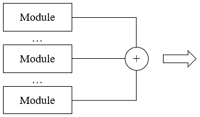
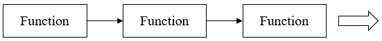
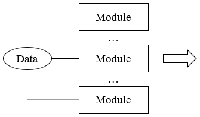
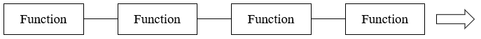
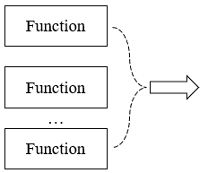
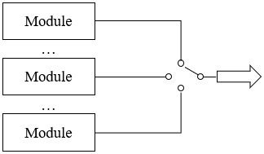
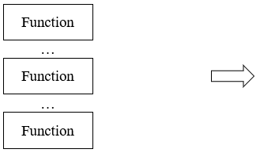
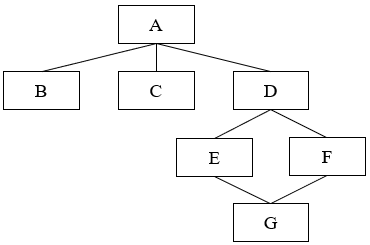

模块化
Module概述 Overview
- 将一个大的软件系统划分为多个模块的过程
- 每个模块完成一个简单功能
特点 Feature
- 减少复杂性：降低问题复杂度，更容易开发和测试
- 提高软件的可靠性：质量得到提升，提升可靠性
- 有助于组织管理：结构清晰、便于管理
- 有助于信息隐蔽：彼此独立
模块独立性
- 模块化并不是越细越好
- 由2个定性标准度量
- 耦合：衡量模块之间互相依赖/链接的紧密程度
- 内聚：衡量一个模块内部各个元素之间彼此结合的紧密程度
耦合 Coupling
- 衡量模块彼此之间互相依赖/链接的紧密程度
- 希望越低越好/松耦合，彼此独立
- 取决于模块之间接口的复杂度，即关联的形式和接口的数据
- 根据耦合度 从高到低，分为：
- 一个模块直接访问另一个模块的内部数据
- 一个模块不通过正常入口转到另一个模块的内部
- 两个模块有一部分程序代码重叠
- 一个模块有多个入口
- 内容耦合极易出现程序错误，大多高级语言在设计时已经禁止出现内容耦合
- 强盗逻辑”；不讲规矩，直接抢夺
- 多个模块共同使用一个公共数据环境，如全局数据 Global Data
- 一个模块改了数据，可能影响所有其他模块，风险较高
- 复杂度随着模块数量的增加显著增加
- 公共环境可以是：全程变量、共享的通信区、内存的公共覆盖区、任何存储介质上的文件、物理设备等
- 常见错误场景
几个模块对同一个数据库的查询
大家共用一个白板。你在上面写了字，可能会盖掉我写的内容；我擦了黑板，你的内容也没了
- 避免的核心原则：不要让大家直接去碰那个“公共环境”
- 多个模块都依赖于某个外部环境的特定格式、协议或接口。包括文件格式、通信协议、硬件接口、数据库的特定查询语句等
- 风险点：在于对外部标准的依赖。如果外部环境变了（比如协议升级了、文件格式变了），所有依赖它的模块都要改
- 模块之间传递的信息中包含用于控制模块内部逻辑的信息
- 一个模块通过传递开关、标志位等控制信息，来直接控制另一个模块的执行逻辑
- 调用者传进来的参数里包含了一个开关或指令，被调用的模块必须根据这个指令来决定自己到底要执行哪段逻辑
- 一个模块充当了另一个模块的遥控器
- 如果 flag=1 则执行 A 功能，使得接收方的逻辑依赖于调用方
- 缺点：
调用者必须知道被调用者的内部逻辑，否则无法控制
复用性差，模块关联紧密
- 核心思想：将“判断逻辑”与“执行逻辑”分离，用数据驱动代替流程控制
- 也叫特征耦合
- 整个复杂的数据结构作为参数传递时，被调用的模块只需要使用其中一部分元素
- 通俗来讲，传递的参数包含多种数据，模块只用了其中一部分，并没有全部使用
- 设计存在浪费和冗余
- 如果使用了整个数据结构，那就是数据耦合了
- 全部信息加载
- 部分信息加载
- 模块之间只通过参数交换/传递简单数据/基本数据类型
- 传递的是独立的、不可分割的值
- 可以是多个简单数据
- 如果传递完整的数据结构，则模块之间就共享了“数据结构定义”；一旦这个结构体增加或减少了一个字段，所有调用它的模块可能都需要重新编译或修改
- 两模块间无直接关系
- 完全独立
- 它们之间的联系完全是通过主模块的控制和调用来实现
力求做到低耦合
尽量使用数据耦合
少用控制耦合和特征/标记耦合
限制公共耦合的范围
完全不用内容耦合
内容耦合 Content Coupling
公共耦合 Common Coupling
外部耦合 External Coupling
控制耦合 Control Coupling
标记耦合 Stamp Coupling
数据耦合 Data Coupling
非直接耦合 No Coupling
内聚 Cohesion
力求做到高内聚
尽量少用中内聚
不用低内聚
功能内聚 Functional Cohesion

顺序内聚 Sequential Cohesion

通信内聚 Communicational Cohesion

const fs = require('fs');
const express = require('express')
const router = express.Router()
router.get('/', (req, res) => {})
router.get('/login', (req, res) => {})
router.post('/register', (req, res) => {})
router.post('/modify', (req, res) => {})
module.exports = router
过程内聚 Procedural Cohesion

文件处理模块 FileProcessor。它包含三个函数：第一步 openFile()，第二步 readHeader()，第三步 parseContent()。调用者必须严格按照 1->2->3 的顺序调用这些函数，否则程序就会报错。它们是因为“执行流程的先后顺序”被捆绑在一起的
一个排序模块，包含选择排序、冒泡排序、插入排序等函数，它们按照不同的排序算法的过程顺序执行
时间内聚 Temporal Cohesion

执行一系列与时间相关的操作。如初始化；这些操作之间没有数据流转关系，唯一的共同点就是它们都必须在系统启动的那一瞬间被执行
逻辑内聚 Logical Cohesion

看起来好像复用性很高，因为一个模块干了所有“输入”相关的事
低效：模块必须包含所有可能功能的代码，即使你只需要其中一个小功能，也必须加载整个模块
一个处理订单的模块，包含创建订单、查询订单、修改订单等函数，逻辑上都与订单处理相关
瑞士军刀：好多工具的集合体
小白的最爱：某个业务相关的逻辑全部放在一个模块中
switch (flag) {
case 条件1:
break;
case 条件2:
break;
case 条件3:
break;
//...
default:
break;
}
偶然内聚 Coincidental Cohesion

缺乏设计规划、为了图省事；如把所有“暂时用得上”的函数都塞进一个叫 Utils 的类里
代码重构不彻底导致
历史遗留问题
临时逻辑
一个模块中包含了各种无关的函数，这些函数之间没有共享的数据或交互行为，它们只是被放在同一个模块中（库函数模块）
模块化设计原则
- 尽力提高模块的独立性
易于开发
便于测试和维护
- 注意模块的可靠性、通用性、可维护性和简单性
可靠性：无差错
通用性：通用化，适用范围广
可维护性：易于修改
简单性：降低复杂性，便于设计和使用
- 大小适中
规模不易过大
代码实现控制到 1 页内，易于阅读和理解
- 深度、宽度和扇出和扇入要适当
深度 Height：模块层次
宽度 Width：同一层模块的最大数
扇出 Fan-out：一个模块可调用的模块数；通常情况下，顶层扇出大，中间层扇出小；建议扇出控制在 7±2 以内，最好是 3-5
扇入 Fan-in：一个模块倍多少上级模块调用；通常情况下
- 模块接口简单、清晰
- 该结构的深度为 4
- 该结构的宽度为 3
- 模块 A 的扇出为 3
- 模块 G 的扇入为 2
